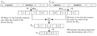

苏智勇
副教授，硕导
地址: 江苏省南京市孝陵卫200号南京理工大学自动化学院7015室
邮箱:
电话: (+86-25)-84315467-715
|
苏智勇副教授，硕导地址: 江苏省南京市孝陵卫200号南京理工大学自动化学院7015室 邮箱: 电话: (+86-25)-84315467-715 |
[个人简介] [研究方向] [科研项目] [学术论文] [学术兼职] [教学] [指导学生] [English Version]
现任南京理工大学自动化学院副教授，硕导。2009年6月毕业于中国科学院计算技术研究所计算机应用专业，获工学博士学位，导师唐卫清研究员。2006年6月毕业于南京理工大学计算机科学与工程学院计算机应用专业，获得工学硕士学位，导师吴慧中教授，李蔚清副教授。2004年6月毕业于南京理工大学计算机科学与工程学院计算机科学与技术专业，获得学士学位。
[学术论文] |
Learning to Hash for Personalized Image AuthenticationZhiyong Su*, Liang Yao, Jialin Mei, Lang Zhou, and Weiqing Li Under Review, 2019. [PDF] [Code] |
|
 |
Robust 2D Engineering CAD Graphics Hashing for Joint Topology and Geometry Authentication via Covariance-Based DescriptorsZhiyong Su*, Ying Ye, Qi Zhang, Weiqing Li, Yuewei Dai IEEE Transactions on Information Forensics and Security, 13(4): 1018-1030, 2018. [PDF] |
 |
Zhiyong Su*, Lang Zhou, Yaobin Mao, Yuewei Dai, Weiqing Tang Multimedia Tools and Applications, 76(20): 20663-20689, 2017. [PDF] |
 |
Topology based 2D engineering drawing and 3D model matching for process plant Rui Wen*, Weiqing Tang, Zhiyong Su Graphical Models, 92: 1-15, 2017. |
 |
Measuring 3D process plant model similarity based on topological relationship distribution Rui Wen*, Weiqing Tang, Zhiyong Su Computer-Aided Design and Applications, 14(4): 422-435, 2017. |
 |
Topology Authentication for Piping Isometric Drawings Zhiyong Su*, Xin Yang, Guangjie Liu, Weiqing Li, Weiqing Tang Computer-Aided Design, 66(9): 33-44, 2015. [PDF] |
|  | Authenticating topological integrity of process plant models through digital watermarking Zhiyong Su, Lang Zhou, Guangjie Liu, Jianshou Kong*, Yuewei Dai Multimedia Tools and Applications, 73(3): 1687–1707, 2014. [PDF] |
 |
Watermarking 3D CAPD models for topology verification Zhiyong Su*, Weiqing Li, Jianshou Kong, Yuewei Dai, Weiqing Tang Computer-Aided Design, 45(7): 1042-1052, 2013. [PDF] |
 |
Topology authentication for CAPD models based on Laplacian coordinates Zhiyong Su*, Lang Zhou, Weiqing Li, Yuewei Dai, Weiqing Tang Computers & Graphics, 37(4): 269–279, 2013. [PDF] |
CCF高级会员、IEEE会员、ACM会员
IEEE Transactions on Information Forensics and Security, IEEE Transactions on Multimedia, Computer-Aided Design, International Journal of Distributed Sensor Networks, International Journal of Automation and Computing
网络系统的信息处理技术
软件技术基础、电力系统通信技术
2014-: 陆竹恒 (与戴跃伟教授共同指导)
2011-: 茅伟伟 (与戴跃伟教授共同指导)
2018-: 邓安, 伍一鹤, 何丽君, 蒋素琴，李惠芳(与孙金生教授共同指导)
2017-: 李奇, 王汉, 姚亮, 梅嘉琳
2016-2019: 李维浩(硕士), 袁浛天(硕士), 姚世明(硕士), 张景蓉(硕士)
2015-2018: 薛佳盛(硕士), 张琪(硕士), 叶颖(硕士)
2014-2017: 陈龚(硕士), 马晓斌(硕士), 王鑫(硕士), 陆颖(硕士)
2013-2016: 郭亚飞(硕士), 沈校生(硕士)
2012-2015: 姚怡超(硕士) (与茅耀斌教授共同指导), 邢成欢(硕士) (与茅耀斌教授共同指导)
2011-2014: 杨洋(硕士)
2009-2012: 许开(硕士), 张琪(硕士)

Copyright © 2019, Zhiyong Su, Last modified: 20.07.2019